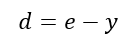
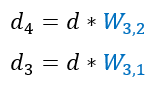

Теперь посчитаем ошибки нейронов.
Сначала начнём с нейрона внешнего слоя.
В нашем случае ответом сети является F5.
Для простоты понимания выразим значение F5 в переменную y.
Ответом сети является-y, эталоном - e, а ошибкой - d.
Имеем следующую формулу для вычисления ошибки сети

Вычислив ошибку сети мы можем вычислить ошибки нейронов предыдущего слоя.
Выглядит это следующим образом:
